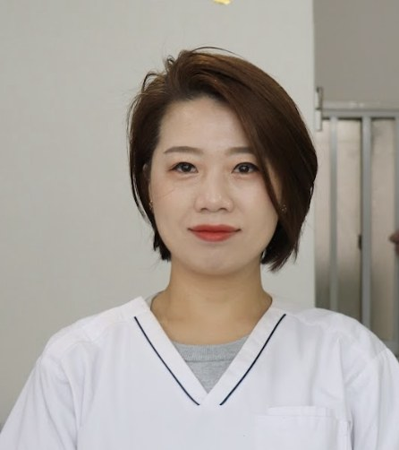
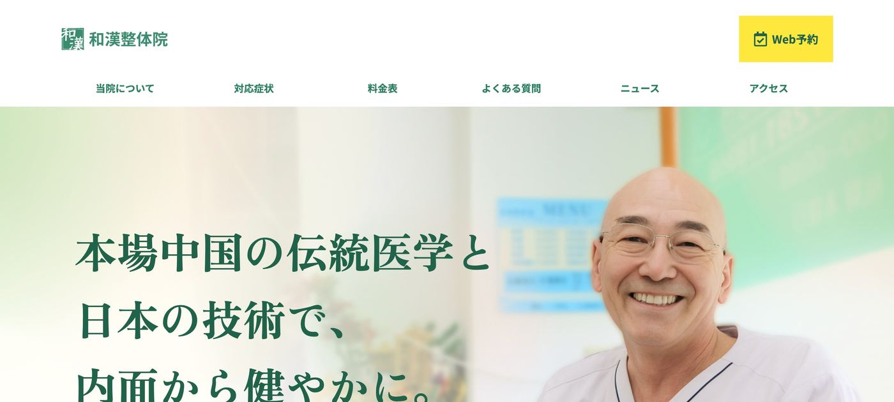
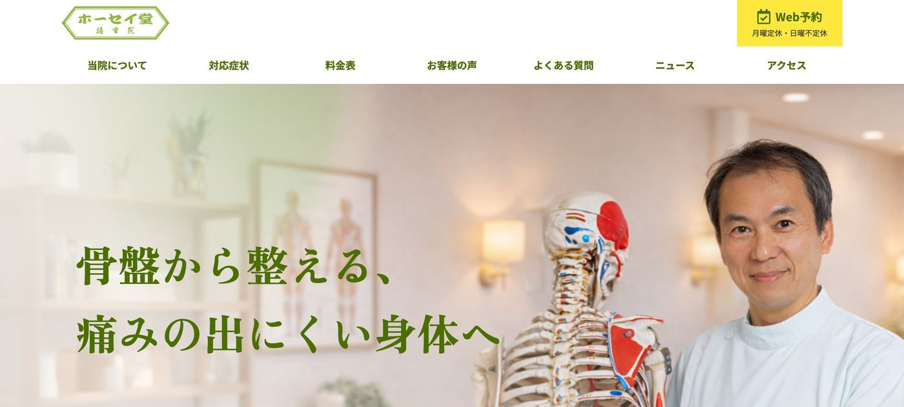

実際のトンマナ（赤・青グラデーション・白カード・角丸ピルボタン）に合わせた3つの追加案です。STUDIO側での再現用イメージとしてご確認ください。
2026年◯月時点、安診Webをご利用中の全17院の実績です（院名は伏せています）
※運用期間（1〜8ヶ月）・院の規模により結果は異なります。特定の院を選んで掲載したものではなく、導入中の全17院を対象に集計しています。
院の皆様から寄せられた声

ホームページ制作だけでなく、LINEやSNSでの院の発信方法など提案してくれました。いつでも電話や対面で相談できる専任パートナーの存在が大きな安心感に繋がっています。Webが苦手な方や、信頼関係を重視する先生に最適です。
和漢整骨院 運営責任者 高橋様
https://wakan-sekkotsu.com/

実際に制作したホームページ
導入の決め手は、担当者の誠実さと「安診Webなら信頼できる」という確信です。個人で取り組んでいる動画制作など、ホームページに直接関係無いことについても一緒に考え、思いを丁寧に吸い上げてくれる心強い存在です。
ホーセイ堂接骨院 市川先生
https://www.kotsuban-housei.com/

実際に制作したホームページ
お電話やフォームの前に、「こんなことも聞いていいのかな」をLINEで気軽に聞いてみませんか。担当者が直接お答えします。
LINE公式アカウントを友だち追加